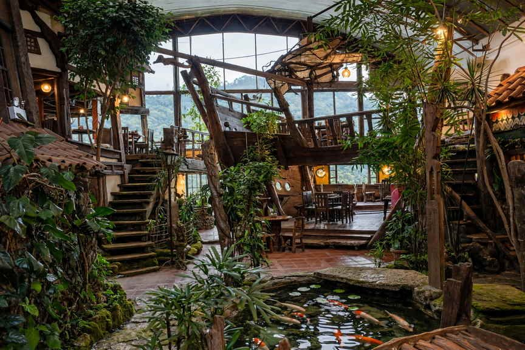
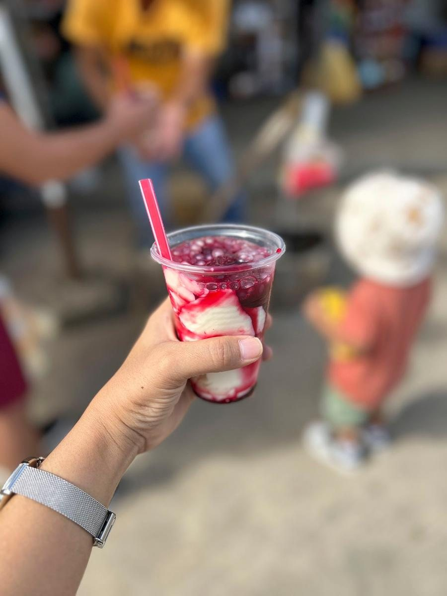
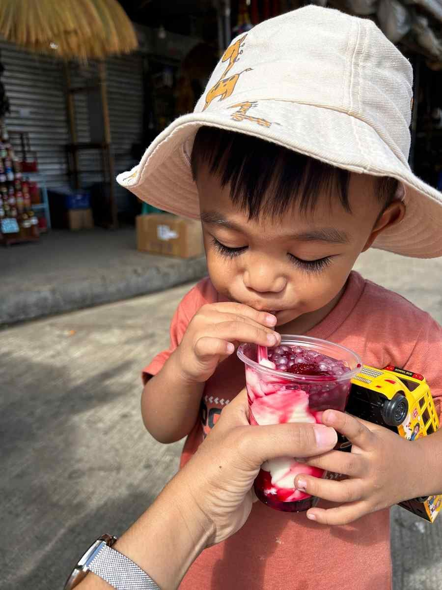
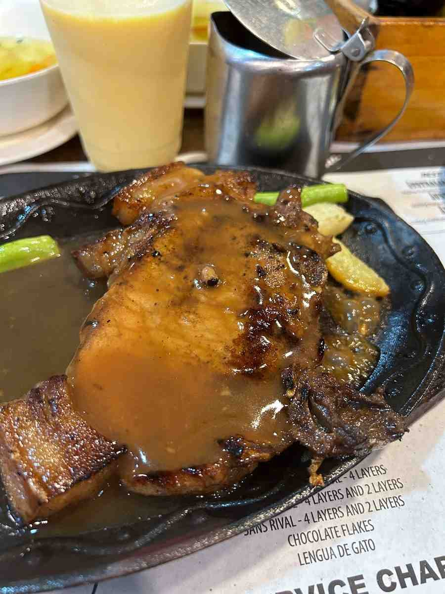
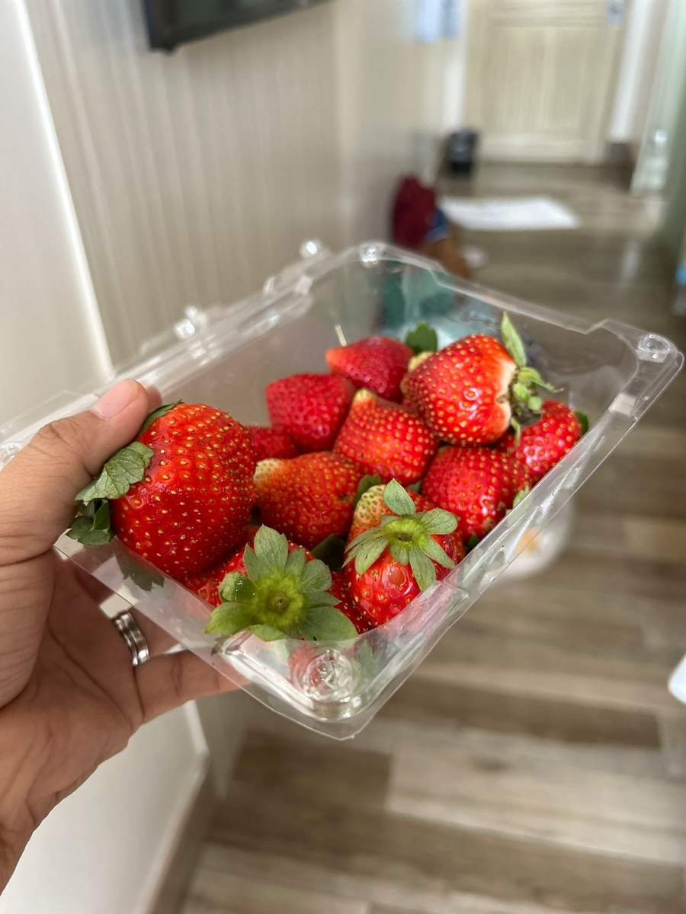
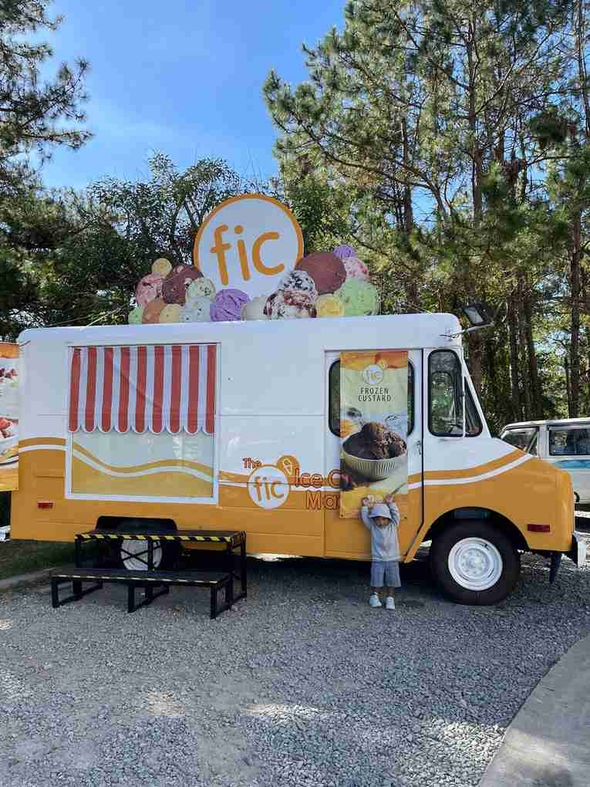
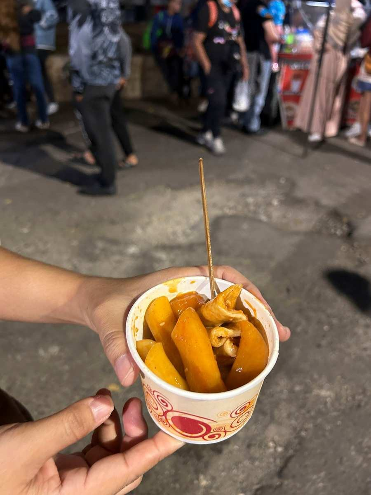

Eating well in Baguio is less about one famous restaurant and more about knowing what the city does best: strawberry taho from a street vendor, cheap and generous plates at old family restaurants, smoky Cordillera dishes such as pinikpikan and etag, warm snacks at the night market, and jam made by nuns for pasalubong. Most of it is affordable, much of it is eaten standing up, and a lot of it tastes better because the air is cold.
This guide covers what to eat first, where locals actually go for it, and how to fit it all into a day. It moves between the two sides of Baguio food: farm-fresh sweets from the highland valleys, and the savoury, preserved cooking of the mountain communities around the city.
One general tip before you start: Baguio restaurants fill up fast on weekends and holidays, and queues at the best-known places can take longer than the meal. Eat a little earlier or later than everyone else, and keep a second option nearby.

What Makes Baguio Food Different
Altitude shapes the menu. At around 1,500 metres, the Baguio and Benguet area grows crops that struggle in the lowlands: strawberries, Arabica coffee, and cool-weather vegetables such as cabbage, carrots and lettuce. You will meet them everywhere, from jam and taho to salads and soups.
The other half comes from Cordillera cooking, which leans on salting, smoking and curing to keep meat through the cold, wet months. Those preserved flavours run through soups and rice plates, so a Baguio food trip swings between sweet and smoky, often in the same afternoon.
Start With Strawberry Taho
Taho is sold all over the Philippines: warm silken tofu with brown sugar syrup and sago pearls. Baguio's version swaps the usual syrup for strawberry syrup, often with bits of fruit, and it has become one of the city's signature snacks. Vendors carry it in metal containers around Burnham Park, Mines View, Session Road and other places where visitors gather, and a cup costs very little.

It is best in the morning, when the taho is still warm and the air is cool. Children tend to love it, and it makes an easy breakfast on the move.

Cordillera Dishes to Try
Some of the most interesting food in Baguio comes from the mountain communities around it. Order one or two of these per meal at first; they are salty and smoky by design, and they are best shared.
Pinikpikan
A chicken soup tied to rituals and gatherings, simmered with etag for a clean but smoky, salty broth. Usually served with sayote or greens, and not spicy. The gentlest way into Cordillera flavours.
Etag
Salted, smoked and aged pork with a deep, slightly funky taste. It seasons soups and stews, and a few slices go a long way.
Kinuday
Smoked meat from the Ibaloi tradition, often sliced thin and fried, then eaten with rice. Rich and intensely savoury.
Pinuneg
A blood sausage seasoned with local spices, served as a side or on a shared platter. Small portions are the point.
Baguio longganisa
A garlicky, savoury pork sausage rather than a sweet one, fried until crisp and served with garlic rice and egg on cold mornings.
Dinakdakan
Grilled pork face and offal tossed in a creamy, tangy dressing. Popular across northern Luzon and best with a group.
These are dishes with cultural weight, not novelty items. Order them at a place that cooks them regularly rather than as a token menu item.
Where Locals Actually Eat
Good Taste
Near Burnham Park, with other branchesThe classic answer when locals need to feed a group fast. A large, noisy Filipino-Chinese restaurant known for huge portions at low prices, and it keeps long hours. Half orders are often enough for two or three people.
Order: buttered chicken, fried rice, pancit, lechon kawali
Café by the Ruins
Shuntug Road, near City HallStarted in 1988 by a group of Baguio artists, including BenCab, on the site of the Garden Theatre, a 1912 outdoor cinema. After a fire in 2017, it reopened at its original site in 2018. The menu leans on Cordillera ingredients and Benguet coffee, and the garden seating is pleasant at lunch.
Order: kamote bread, a Filipino breakfast plate, local coffee
Farmer's Daughter
Near Tam-awan VillageThe easiest place to try Cordillera dishes without guesswork. Rustic wooden tables, a valley view and plates sized for sharing. It pairs naturally with a visit to Tam-awan Village, the artists' village of reconstructed Ifugao and Kalinga houses.
Order: pinikpikan with etag, pinuneg, a smoked pork dish
Vizco's
Session Road, with other branchesFamous for strawberry shortcake made with soft chiffon, cream and fresh strawberries. Most tables order at least one slice, so go earlier in the day on weekends, before the cakes run out.
Order: strawberry shortcake, baked pasta
Sizzling Plate
Session Road and other branchesThe restaurant that made sizzling plates a Baguio habit. Its first Baguio branch opened in 1978, and it is known for affordable steaks and chops served on hot iron plates under a pour of gravy.
Order: pork chop or steak with rice

A few more worth knowing
Hill Station, in the old Casa Vallejo building on Upper Session Road, mixes Filipino and international cooking and suits a slow dinner. Oh My Gulay, on an upper floor along Session Road, serves vegetarian food in a quirky, art-filled space. 50's Diner on Military Cut-off is a long-running retro diner for burgers and milkshakes, and Lemon and Olives on Outlook Drive is the city's well-known Greek taverna among the pines. For a cold morning, Choco-late de Batirol near Camp John Hay serves thick hot chocolate whisked in a wooden batirol, with bibingka and suman.
Strawberries and Sweet Things
Strawberries are grown in La Trinidad, just outside Baguio, and they turn up everywhere: in jams, shakes, taho, cakes and in plastic tubs at the public market and roadside stalls. They are at their best and cheapest during the cool months, roughly from late in the year into the first months of the next. Picking your own at the La Trinidad farm is a short jeepney ride from the city, and our Baguio and La Trinidad travel guide covers how to get there.

Ice cream and frozen desserts are popular despite the cold, especially on sunny afternoons around Camp John Hay and the parks, where food trucks and kiosks set up under the pine trees.

The Public Market and the Night Market
To taste without sitting down, start at the Baguio City Public Market at the lower end of Session Road. You will find strawberries, jams, coffee beans and cured meats, along with vegetables from La Trinidad and the rest of Benguet sold by the kilo.
After dark, the Harrison Road night market by Burnham Park is mainly about clothes, but its food stalls sell skewers, warm drinks and small snacks such as spicy rice cakes. Treat it as a snack stop rather than dinner. Our Baguio Night Market guide covers hours and how to get the most out of it.

Pasalubong: What to Bring Home
Good Shepherd's ube jam is the best-known Baguio pasalubong. It is made at the Mountain Maid Training Center, run by the Sisters of the Good Shepherd near Mines View Park, and sales have helped fund the education of young people from the Cordillera since 1952. The shop also sells strawberry jam, peanut brittle, lengua de gato and cookies. Buy at the convent shop if you can, since resellers in the city and online charge noticeably more, and go in the morning on weekends, because popular items can sell out.
Other common choices include strawberry jam and strawberry wine from La Trinidad, peanut brittle, Benguet coffee beans and fresh vegetables from the public market.
A One-Day Food Plan
Sweet to smoky · one dayEat your way through Baguio
- MorningStrawberry taho at Burnham ParkThen coffee and kamote bread at Café by the Ruins
- LunchGood Taste for a shared feastGo at 11 to beat the queue
- AfternoonTam-awan Village, then Farmer's DaughterPinikpikan and Cordillera plates to share
- Late afternoonStrawberry shortcake at Vizco'sOn the way back to Session Road
- EveningNight market snacks on Harrison RoadLight bites, small bills
Save the public market and Good Shepherd for your last morning, so jars and brittle do not get crushed in your bag.
Tips for Eating Well in Baguio
Four habits that make a Baguio food trip easier.
Eat off-peak
Lunch at 11 and dinner before 6 can save you an hour in line on busy weekends and holidays.
Carry cash
Street vendors, market stalls and smaller eateries often do not take cards. Small bills make everything faster.
Share Cordillera plates
Etag and kinuday are salty and smoky. Order one or two per meal and share, so you can taste more without overdoing it.
Walk between meals
Session Road, Burnham Park and the market are close together, and traffic can make short taxi rides slow.
Planning Your Food Trip
Two or three days is enough to work through most of the city's food highlights at a relaxed pace. Let the city set the rhythm: something sweet in the morning, something smoky at lunch, cake in the afternoon and a market stroll before you leave.


Comments
No comments yet. Been here recently? Share a tip or ask a question.
Leave a Reply